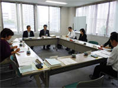

- 【日時】
- 5月12日(木)10:00～12:00
- 【場所】
- 埼玉県生協連・会議室
- 【出席者】
- 8人(母親大会連絡会・さいたまコープ・パルシステム埼玉・さいたま市消団連・埼玉消団連）
■議題
- 学習懇談会

「放射性物質による農畜産物への影響と県の取り組み」
講師：埼玉県食品安全局 農産物安全課・畜産安全課より
- 農林水産省と連携し､週1回(火：サンプル採取､木：結果判明､公表)調査しています。
- 品目、サンプリングはホウレンソウ、コマツナ、ミズナ、原乳の4種類と、時期や産地状況等から判断して他の作物を決めます。
- 3/20から10回にわたり、計10品目86検体を調査し、暫定基準値を下回っています。
- 土壌調査は、4か所で行っています。これから県内約6か所で2・3ヶ月おきに長期的な調査を予定しています。
- 牧草は草刈りの時期(4/22)に調査しました。
≪○は質問・要望、→は解答≫
○出荷自粛、出荷制限、摂取制限について。
→出荷自粛は、自治体が検査に基づき基準値を超える放射性物質が検出された食品の出荷自粛を要請すること。出荷制限(出荷停止)は、国の判断で基準値を超えた食品について都道府県に指示を出す、より強い措置のこと。摂取制限は出荷制限よりさらに厳しく、地域全体に汚染の影響が広がっているかを総合的に国が判断し、都道府県に指示を出すことです。
- 2010年活動報告とまとめ、2011年度活動方針について
- 前回の会議で意見交換し加筆・修正しましたが、更に検討を重ねます。
- 報告事項
（1）第6回食の安全オンブズ会議（3/30）
（2）埼玉県、さいたま市、川越市の「平成23年度食品衛生監視指導計画（案）」に対する要望についての対応等
（3）第2回関東農政局との消費者懇談会（2/4 関東農政局ホームページより）